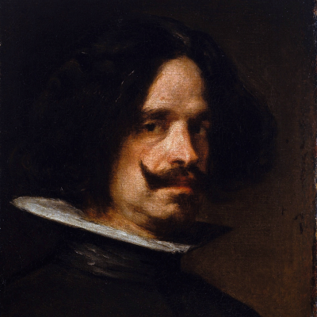

Diego velazquez
Maestro sin par del arte pictórico, el sevillano Diego Velázquez adornó su carácter con una discreción, reserva y serenidad tal que, si bien mucho se puede decir y se ha dicho sobre su obra, poco se sabe y probablemente nunca se sabrá más sobre su psicología. Joven disciplinado y concienzudo, no debieron de gustarle demasiado las bofetadas con que salpimentaba sus enseñanzas el maestro pintor Herrera el Viejo, con quien al parecer pasó una breve temporada, antes de adscribirse, a los doce años, al taller de ese modesto pintor y excelente persona que fuera Francisco Pacheco. De él provienen las primeras noticias, al tiempo que los primeros encomios, del que sería el mayor pintor barroco español y, sin duda, uno de los más grandes artistas del mundo en cualquier edad, sus obras mas populare son:
Tres músicos
Los borrachos o El triunfo de Baco
La rendición de Breda o Las lanzas
Detalle de Las Meninas

Vieja friendo huevos
Menu
